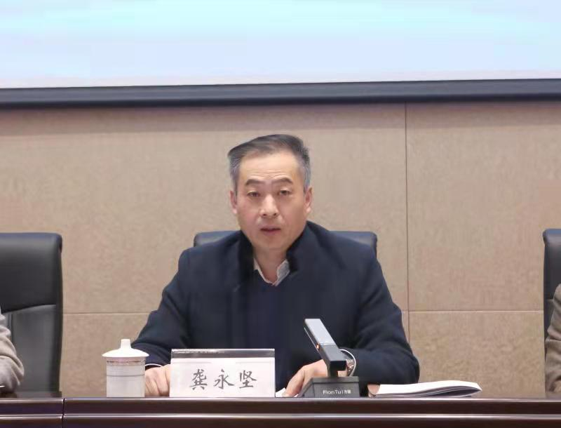

金职院留学归国人员联谊会成立仪式暨第一次全体会员大会顺利举行
12月3日下午，金职院留学归国人员联谊会成立仪式暨第一次全体会员大会在明德报告厅举行。市侨联副主席王华德，秘书长盛灶生， 校党委副书记龚永坚出席大会，学校各民主党派、统战团体负责人以及全体会员参加大会。大会由校党委委员、组织部、统战部部长李文婷主持。
大会在雄壮的国歌声中开幕。龚永坚与王华德首先为学校留学归国人员联谊会共同揭牌。校知联会会长蓝巍代表统战团体致贺词。
王华德代表市侨联对大会的召开表示热烈祝贺，他充分肯定了学校为留联会成立所做的各项工作， 同时简要介绍了留联会的组织性质、使命任务及发展历史，并希望学校留联会从强化政治引领，构筑留学报国的人才库； 发挥自身优势，集聚建言献策的智囊团；围绕发展大局，当好民间外交的生力军等三个方面着手， 最大限度地发挥留学归国人员的积极性、主动性，多方面、多角度、多层次地参与学校和地方建设发展。
龚永坚代表学校党委对长期关注学校发展的市委统战部、市侨联表示真诚的感谢，向出席大会的全体会员致以诚挚的问候。 他指出，学校的发展离不开留学归国人员的勤学钻研和无私奉献，成立留联会，对进一步巩固和扩大党的群众基础， 落实立德树人根本任务，实现教育高质量和学校高质量发展具有积极作用和深远意义。就留联会如何开展工作，龚永坚提出三点要求： 一是提高政治站位，在强化思想引领上下功夫。要旗帜鲜明强化思想引领，注重特色创新工作方法，注重发现培养代表人士， 不断增强留联会的号召力、凝聚力和影响力。二是夯实基层基础，在发挥自身优势上谋突破。要着力加强班子建设，着力提升能力素质， 努力建设一支高素质的留学归国人员代表人士队伍，为学校高质量发展提供坚实的人才保障。三是围绕中心大局，在提升服务能力上创佳绩。 要发挥学校建设生力军作用，发挥留学报国人才库作用，发挥建言献策智囊团作用，为学校和地方高质量发展作出新的更大贡献。
会上，王小兵等12位会员当选为留联会第一届理事会理事。会后，留联会第一届理事会会议召开，选举产生了第一届理事会会长和副会长。 张娴当选为会长，卢进、罗雨、亢莹利当选为副会长。
版权所有：金华职业技术学院 地址：浙江省金华市海棠西路888号 电话:0579-82265012 传真:0579-82265004
招生咨询电话:0579-82265035 浙ICP备12030250号 浙公网安备 33071802100018号
33071802100018号